On his first trip to Chicago, Phil Long was delighted. Walking around the city, he declared “it’s a city that is very rich in extraordinary buildings…and has a strong sense of what’s visually important.” Architecture and design are Phil Long’s passion. As the Chief Executive of the National Trust for Scotland since 2020, he has responsibility for a full range of Scottish heritage from the craggy peaks of the northern Highlands to the sophisticated Charles Rennie Mackintosh-designed Hill House. On their first stop in a four-city U.S. trip, Long and his wife Annie Campbell Long enjoyed a full range of Chicago’s architecture and artistic offerings, organized by the Chicago Scots, his enthusiastic hosts dedicated to all things Scottish and Illinois’ oldest nonprofit organization.
The Longs’ visit had begun with a weekend stop in Oak Park to see Frank Lloyd Wright’s home and studio and in Hyde Park to tour Wright’s Robie House. Given the similarities between the designs of Wright and Scottish designer and architect Charles Rennie Mackintosh, a particular interest of Long’s, I asked him if the two knew each other’s work, both influenced by the then popularity of Japanese design. “Obviously they were contemporaries…they might have through publications, but Macintosh never travelled…There’s a possibility, it would be interesting to look into,” he observed.
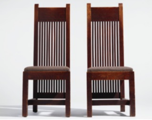
|
|
The tour of Chicago included a packed schedule on Monday, April 5, when the Art Institute, the Driehaus Museum, and the Museum of Contemporary Art (MCA) were on the agenda. Chicago Scots President and CEO Gus Noble, Chicago Scots Board of Governors member Ginny Van Alyea, and Kirstin Bridier, Executive Director of the National Trust of Scotland, USA, accompanied the Longs.
The morning whirlwind tour of the Art Institute comprised collections of medieval art and armor, decorative arts, the Impressionists, and modern paintings and sculpture led by curators Jonathan Tavares, Gloria Groom, Ellenor Alcorn, and Emerson Bowyer. Special note was made of Scottish pieces in the museum collection.
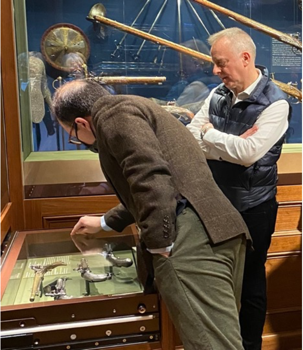
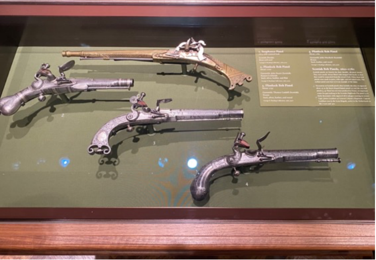
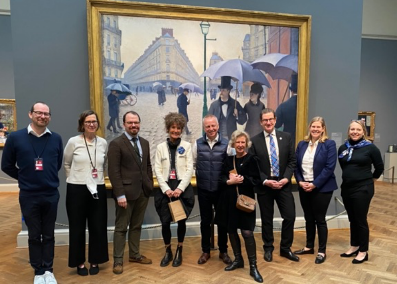
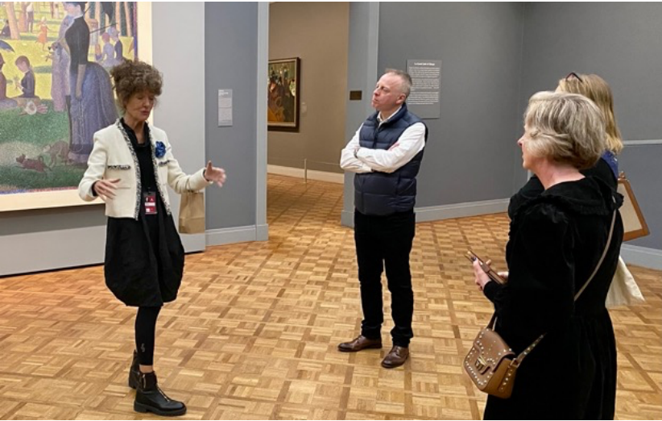
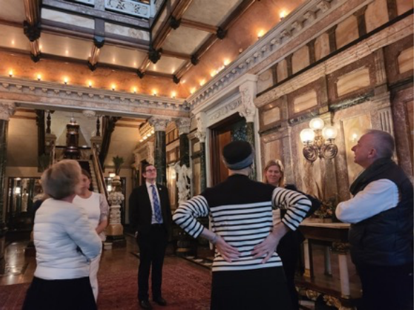
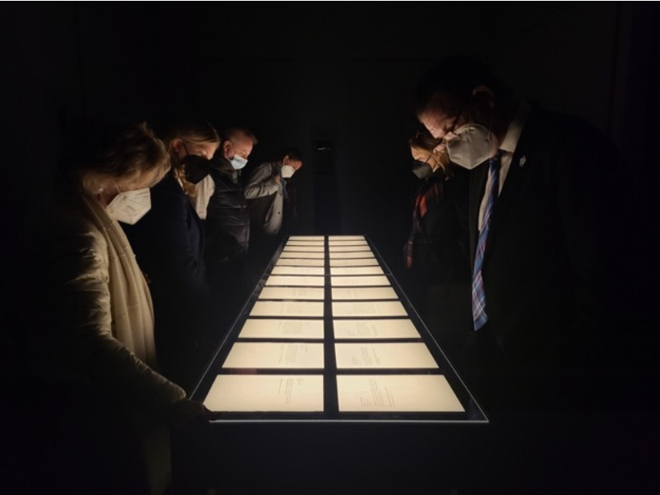
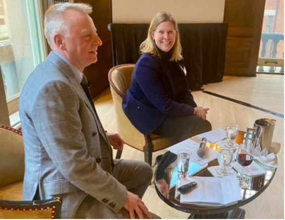
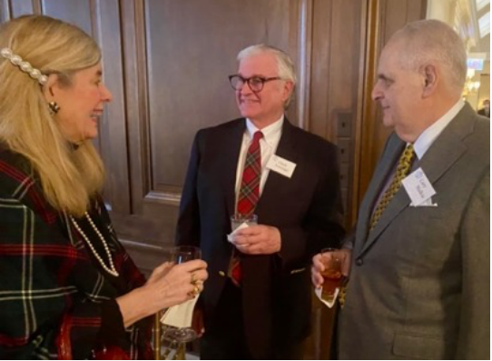
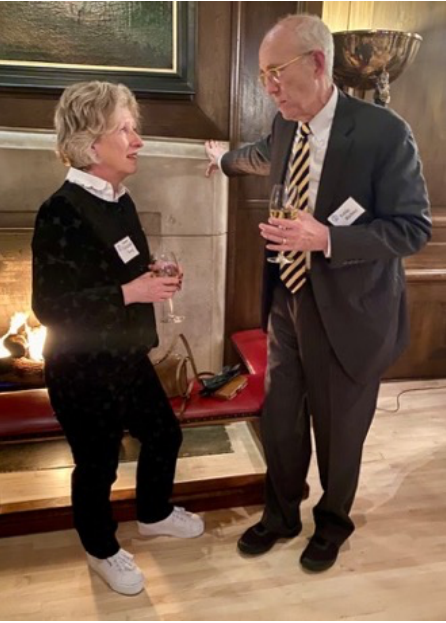
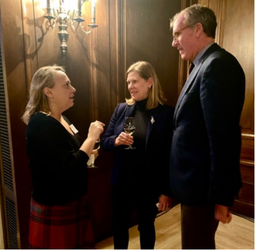
At its annual Feast of the Haggis and its celebration of Robert Burns’ birthday, Chicago Scots raises money to support Caledonia Senior Living & Memory Care, its facility for seniors in North Riverside. Chicago Scots President and CEO Gus Noble was honored last year with the Officer of the Most Excellent Order of the British Empire (OBE) award for his service to Scottish culture in the United States. Phil Long was given the same honor in 2020 for his founding leadership of the first museum dedicated to Scottish art and design, the V&A Dundee, an affiliate of the
famed V&A London. Its dramatic design was said to be inspired by cliffs on the eastern edge of Scotland. Long was appointed its director in 2011.
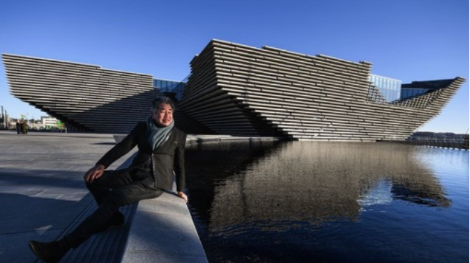
| Architect Kengo Kuma outside the new Dundee V&A | photo: Jeff J. Mitchell |
In his talk to Chicago Scots, Long described the broad scope of the National Trust for Scotland’s responsibilities which encompass not only the built environment of stately homes and castles but also the natural environment. “We have coastlines with over 400 islands with habitats for over one million seabirds….240 miles of mountain footpaths to maintain…11,000 archeological sites that we’re responsible for…beautiful gardens…eight national nature reserves… the birthplace of Robert Burns….300,000 artifacts of art and design…”
Although the Trust’s budget of roughly £44 million ($57 million) is smaller than our National Trust for Historic Preservation’s budget of $151.8 million, its per capita budget is dramatically higher, given Scotland’s population of about 5.5 million compared to 332 million estimated for the U.S. The National Trust of Scotland is particularly impressive for the breadth of its work, including the natural features not in the portfolio of its American equivalent. Both are private charities, relying on donations and grants to pursue their goals.
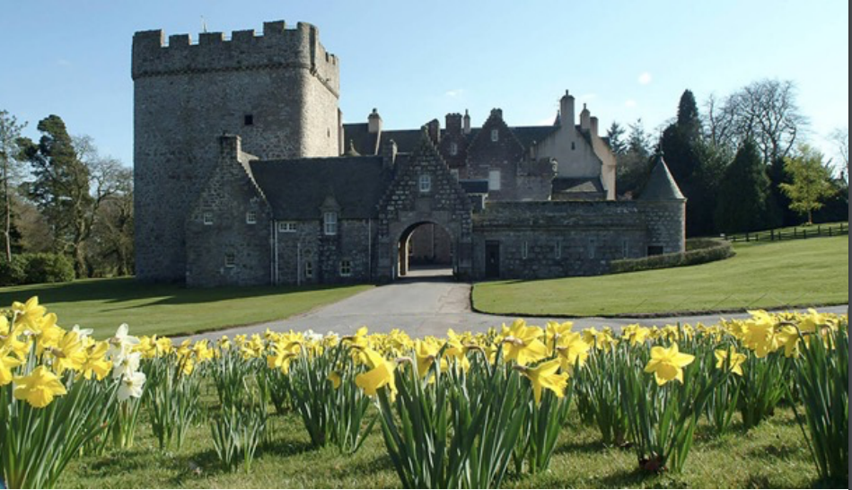
| Drum Castle | photo: National Trust of Scotland |
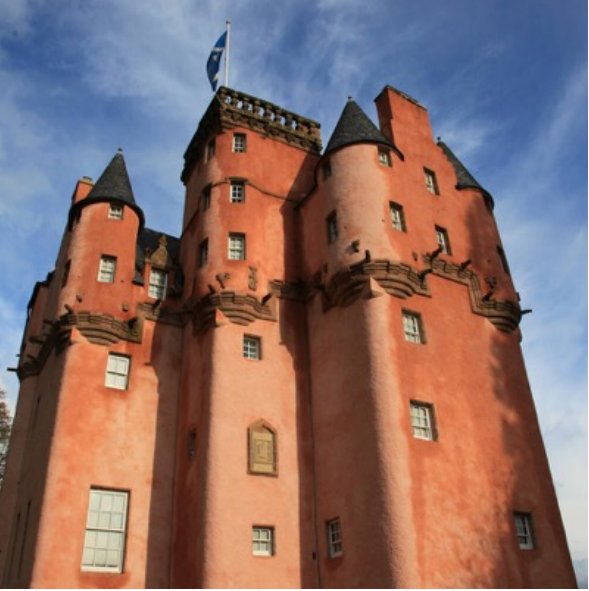
| Craigievar Castle | photo: National Trust of Scotland |
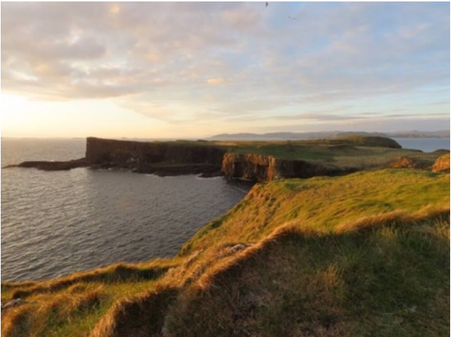
| Cliffs of Staffa, an island in the Inner Hebrides | photo: National Trust of Scotland |
| Glencoe in the Scottish Highlands | photo: National Trust of Scotland |